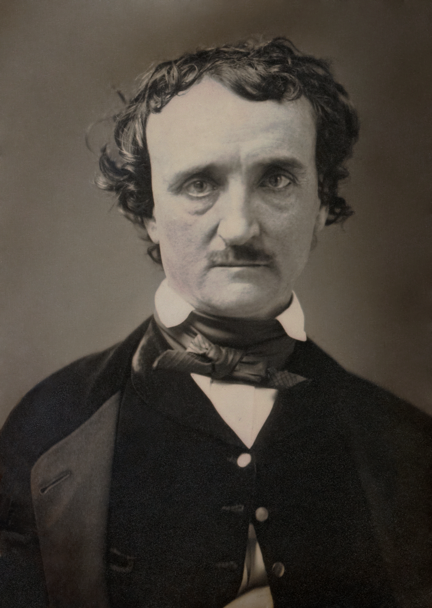
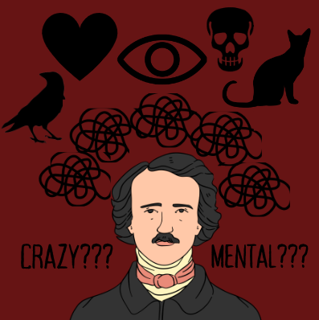
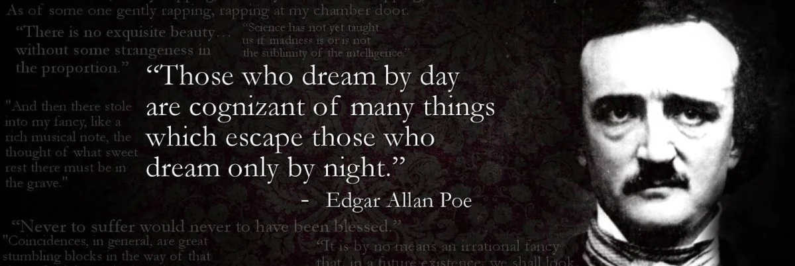

Edgar Allan Poe wrote from the inside of suffering. His tales of
obsession, paranoia, grief, and psychological collapse were not merely
Gothic exercises in entertainment — they were dispatches from a mind
under siege. Born in 1809 and dead by 1849 under circumstances still
debated today, Poe lived a life marked by devastating loss, poverty,
addiction, and emotional instability. What makes him remarkable is not
just that he suffered, but that he transmuted that suffering into
literature so psychologically precise that it reads, nearly two
centuries later, like a diagnostic manual written in verse and blood.
Poe's work sits at a unique crossroads: it reflects the limited mental
health understanding of his era while simultaneously anticipating the
psychological language we use today. To read Poe through a modern lens
is to discover that he understood the human mind's capacity for
self-destruction with an intimacy that still startles.

Clearly, Edgar Allan Poe
